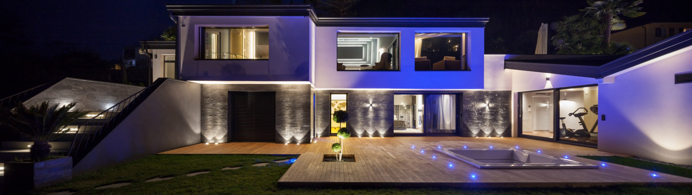
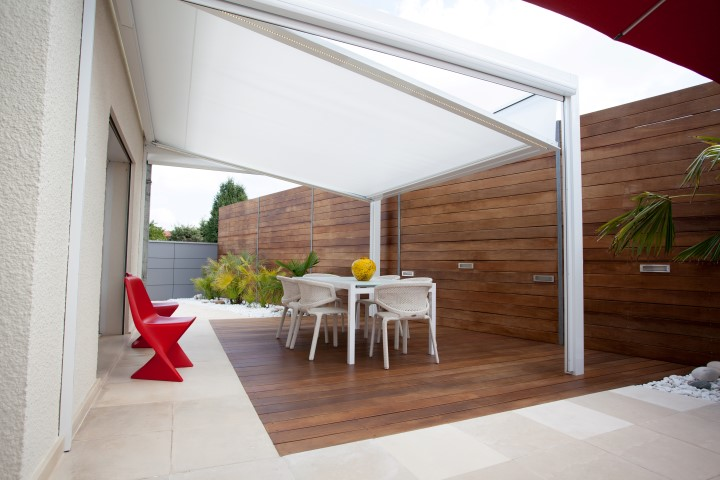

MON BEAU MEUBLE, MENUISIER À MARSEILLE
TRAVAUX DE MENUISERIE EN BOIS, ALUMINIUM, PVC ET VERRE A MARSEILLE
Depuis sa création, l’entreprise MON BEAU MEUBLE à Marseille ne cesse de progresser dans le domaine de la menuiserie.
Depuis 10 ans, nous sommes spécialisés dans la conception, l’installation ainsi que la rénovation de tous types de structures.
À l'affut des progrès et des nouvelles technologies, nous vous assurons des solutions innovantes et tendances, adaptées à vos besoins et à vos envies.
Qualifié Qualibat, notre menuiser agenceur est en mesure de répondre à vos demandes.
Je vous fait part de mon expérience et mon savoir-faire confirmé pour répondre à toutes vos exigences.
Passionné et créatif, je met tout en œuvre pour vous garantir des structures alliant la qualité, l’esthétisme et la durabilité.
MON BEAU MEUBLE est votre unique interlocuteur pour la gestion de tous vos travaux de menuiserie.

Menuiserie sur-mesure en bois, PVC et aluminium !
Votre spécialiste PRO MC vous accompagne dans vos projets d’agencement intérieur. En bois, aluminium, PVC ou en verre, Nous vous proposons des prestations sur-mesure, fournitures locale et pose, à savoir :- Les portes (portes d'entrées, portes fenêtres)
- Les fenêtres (ouvrants, oscillo battants, soufflets et fixes)
- Baies vitrées
- Volets roulants / battants - Rideaux galvanisés - Portails
- Parquet / Terrasse / Pergola
- Cuisine / Dressing
Pour plus de renseignements ou pour établir un devis détaillé, n’hésitez pas à contacter MON BEAU MEUBLE à Marseille.